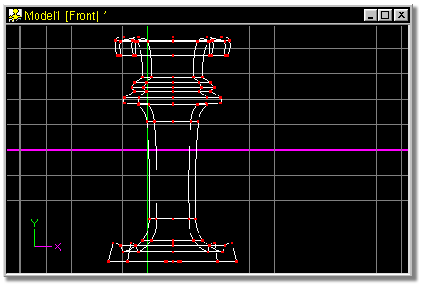
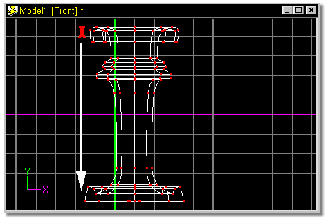
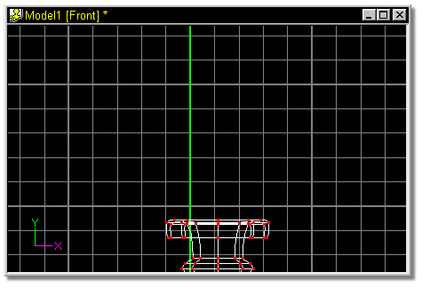

Figure 8 shows the newly lathed spline.


Release the mouse button when the screen looks similar to figure 10.

 Click the Lathe Button.
Click the Lathe Button.
 Click the Move button and click in the window (red X in figure 9). While
holding the mouse button down, drag the window in the direction of the white
arrow.
Click the Move button and click in the window (red X in figure 9). While
holding the mouse button down, drag the window in the direction of the white
arrow.